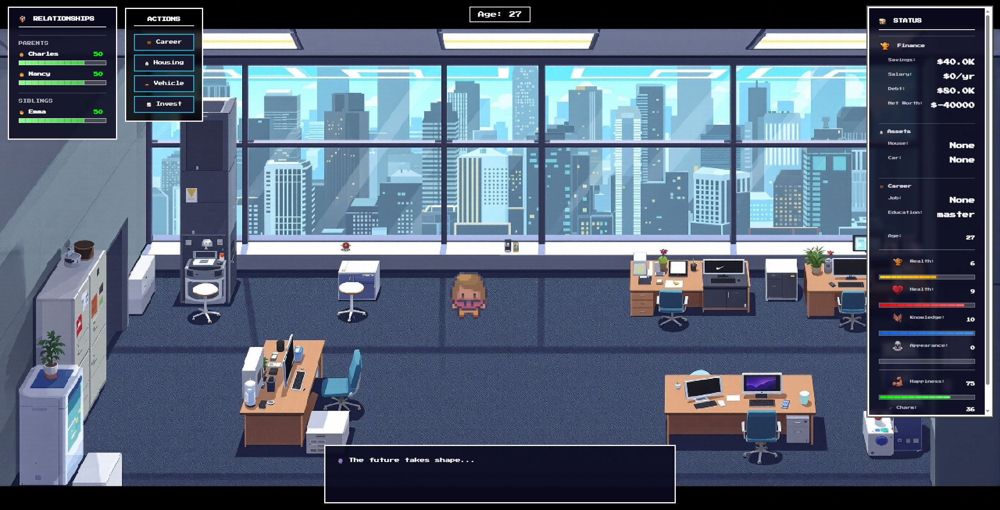
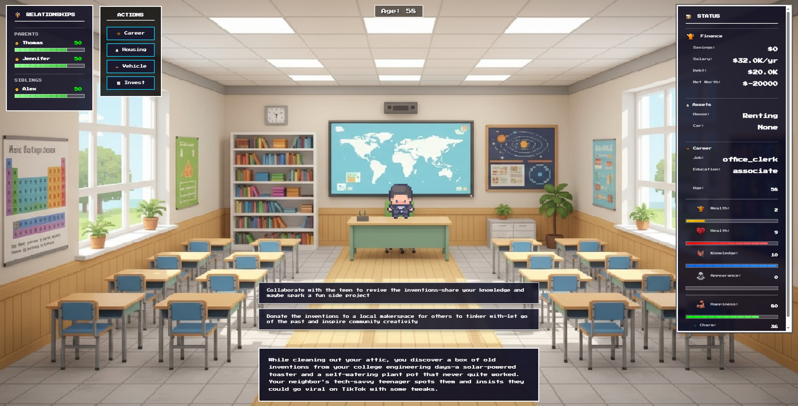
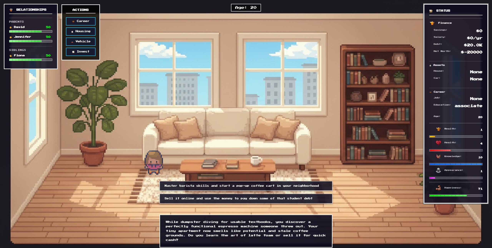
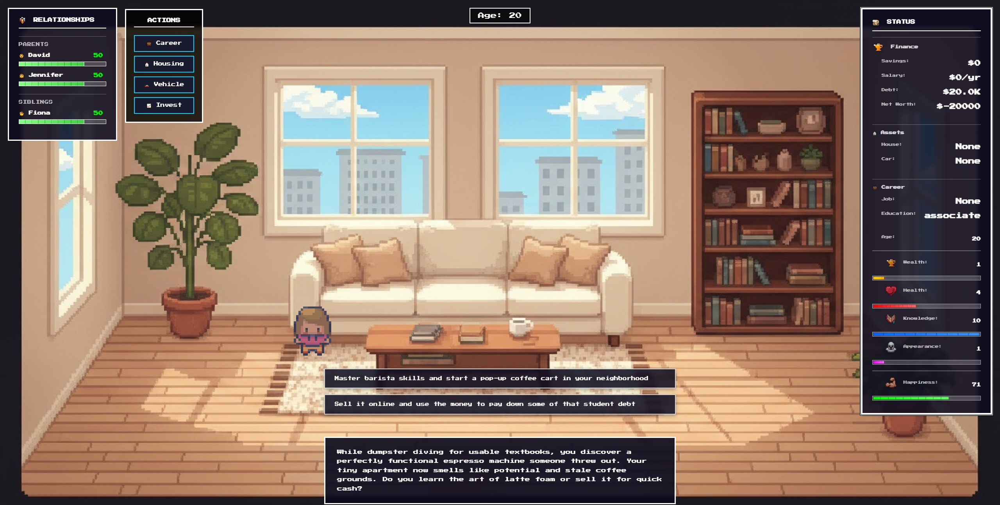
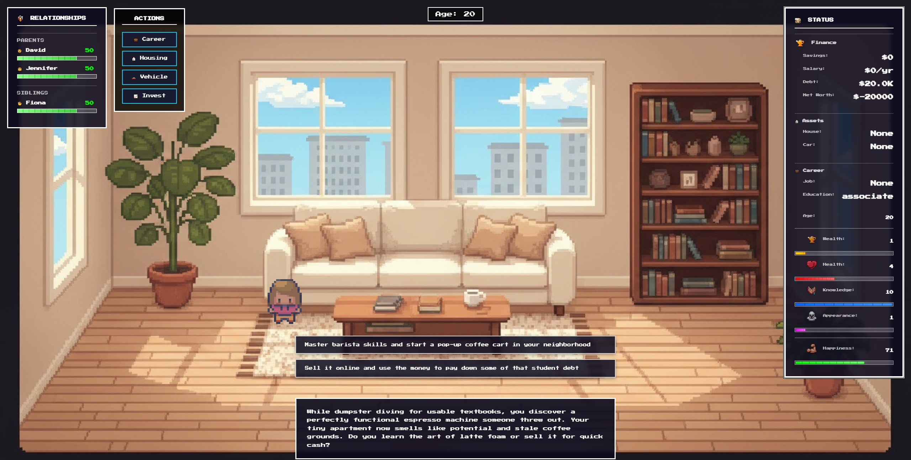

Games
Life Simulator
AI-Driven Text-Based Life Simulation Game with Pixel Art Aesthetics


 


Life Simulator is an innovative web-based life simulation game that integrates AI technology (currently using DeepSeek API) to dynamically generate endless, personalized life events. Players begin at age 0 and navigate through a unique virtual life journey filled with AI-generated daily events and predefined milestone moments like college entrance exams, career choices, marriage, and retirement. The game features a deep attribute system with 4 core stats (Wealth, Health, Knowledge, Appearance) and 3 hidden stats (Happiness, Charm, Fame), alongside a relationship network. Combining retro pixel art visuals with modern UI design, the game offers a minimalist interaction experience focused on meaningful choice-making. Built with HTML5, JavaScript, and p5.js, and deployed on Vercel, Life Simulator explores the future deployment of AI technology in different game mechanics.
BreakOut
2D Side-Scrolling Platformer | Game Jam Project
BreakOut is a fast-paced 2D side-scrolling platformer developed during a game jam by a three-person team. Set in the modern day, the game tells the story of a government underground construction project that reaches 20 miles below the surface, where workers discover a terrifying secret—monsters dwelling in the depths. Players control one of the few surviving workers trapped in the facility, fighting to escape the dungeon while evading relentless monster attacks. The game combines precise jump mechanics with strategic decision-making, where players must choose between risky shortcuts and safer but longer paths.
(Note: The real game view is much smaller. This demo is designed to showcase the basic levels and mechanics.)
(Note: The real game view is much smaller. This demo is designed to showcase the basic levels and mechanics.)
Parasoul
Souls-like Boss Rush
Parasoul is a thrilling and high-stakes souls-like boss rush where players can battle countless challenging foes to increase in power and take on increasingly tougher enemies. Prove yourself against bosses, and equip yourself with upgrades from the market.
Between
First-Person Narrative Exploration | Puzzle | Resource Management
Currently in Active Development
Note: This video showcases an early concept demo. The game is still in active development.
Between is an first-person narrative exploration game built in Unreal Engine 5, featuring a unique looping structure where each cycle reveals new layers of a mysterious story. Set across 2-3 interior environments, the game challenges players to observe subtle environmental changes, solve interconnected puzzles, and make meaningful resource management decisions that impact subsequent loops. As a solo developer, I'm creating a 30-60 minute experience that emphasizes atmosphere, environmental storytelling, and psychological tension. The game employs minimal UI to maximize immersion, relying on lighting, sound design, and spatial arrangement to guide players through its philosophical narrative. Each loop subtly transforms the world—objects shift, new clues emerge, and previous solutions may no longer work—requiring players to retain knowledge across cycles and adapt their strategies. This projec is currently in active development, Between represents my exploration of how structural repetition can deepen narrative engagement and player investment. This vertical slice demonstrates the overall concept of level1.